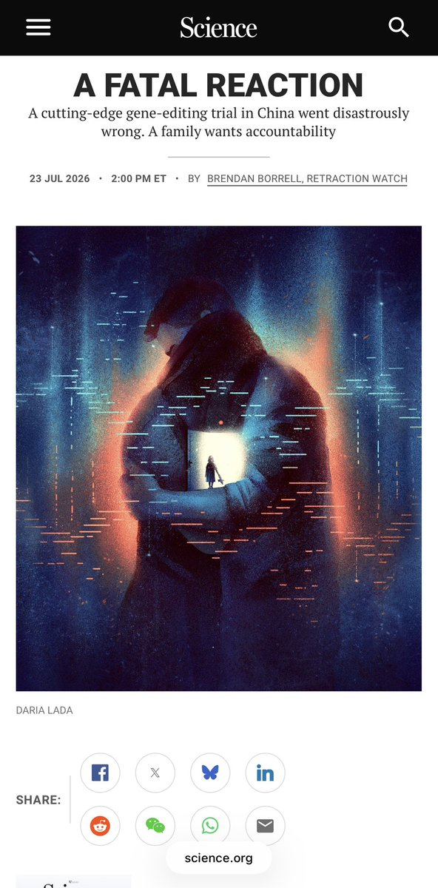
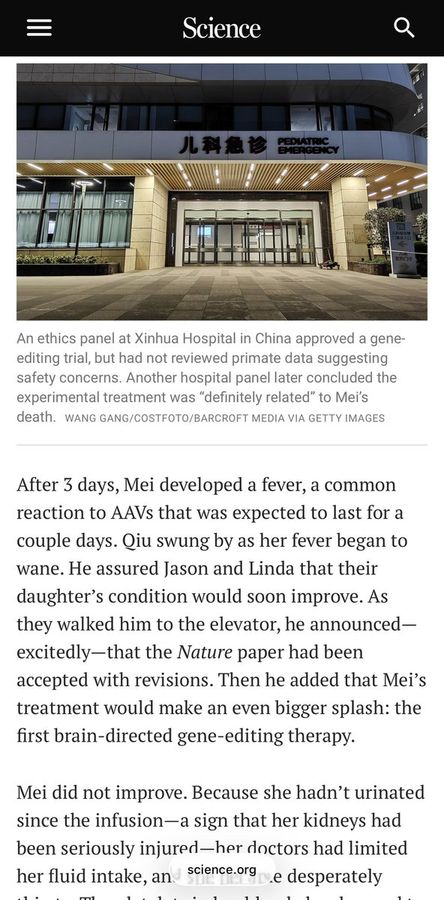
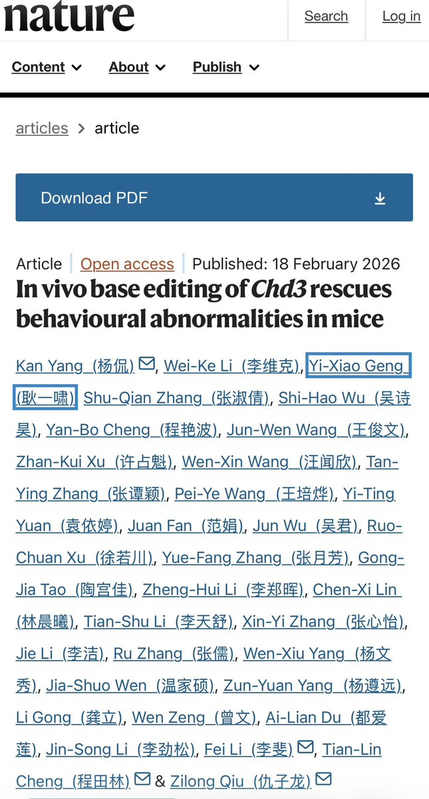

洛铃🦊Magic Caster
@LolingVerse
可怜的自闭症小孩子……小孩子基本上很难决定自己的命运，而遇到这种反智家庭则……😢



方舟子
@fangshimin
上海交大的仇子龙，悍然在1名有轻度自闭症的6岁女孩身上尝试改变大脑基因的基因编辑，往脊液注射是常规用量几千倍的巨量的病毒载体，引起激烈的免疫反应，几天后女孩死了。整个试验是女孩父母花了600多万元资助的，包括给了研究人员100万服务费。事后医院只被罚了2万多元，仇子龙若无其事地在《自然》 https://t.co/XU3EFbtBxT